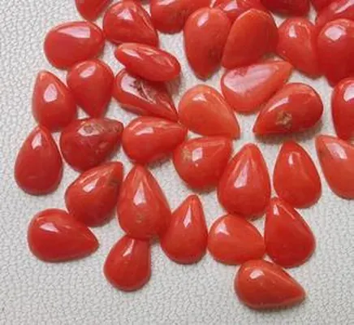

象牙與骨雕：禁區中的白色藝術
象牙曾是「白色黃金」——如今它是國際貿易的紅線。懂得紅線，比懂得行情更重要。

核心定義
象牙（ivory）是象的門齒（本質是牙本質，dentin）——質地細密、溫潤、可精雕，被譽為「白色黃金」。歷史上象牙雕是頂級藝術品，但現代因大象瀕危，國際貿易被《瀕危野生動植物種國際貿易公約》（CITES）嚴格禁止。
現代替代品：猛獁象牙（遠古滅絕象、合法）、骨雕（牛骨等）、植物象牙（象牙果）——它們提供「象牙質感」而不觸犯保育紅線。收藏象牙藝術品，先確認「合法舊件＋證書」。
特徵與分類
| 材料 | 本質 | 紋理 |
|---|---|---|
| 象牙 | 象門齒牙本質 | 交叉弧線紋（引擎紋） |
| 猛獁象牙 | 遠古象化石 | 紋理更粗 |
| 牛骨 | 動物骨骼 | 孔洞與骨髓腔 |
| 象牙果 | 植物果實 | 點狀紋理 |
象牙的鑑定特徵：「引擎紋」（交叉弧線，Schreger lines）——這是象牙特有的微觀紋理，放大鏡下清晰可見；牛骨有骨髓腔與孔洞、植物象牙有點狀結構——三者一眼可辨。
科學原理
象牙的本質是牙本質：由牙小管（微管）與膠原基質構成——橫切面可見交叉的引擎紋（Schreger 線），是象牙的「身分指紋」。硬度約 2.5、怕酸怕乾（乾燥易裂）。
鑑定：放大鏡看引擎紋、紫外燈（象牙發藍白螢光）、比重（約 1.7–1.9）——樹脂仿品無引擎紋、骨雕有髓腔。現代鑑定還用 DNA 與同位素確認物種來源——法規面前，鑑定是執法工具。
鑑定與鑑別方法
- 放大鏡看引擎紋（象牙特有）
- 看髓腔：骨雕有、象牙無
- 紫外燈：象牙藍白螢光
- 比重測試
- 證書與來源文件：合法性的唯一證明
市場行情與保養建議
市場現況：CITES 禁止現代象牙國際貿易——市場上的「象牙」多為合法舊件（有來源證明）或猛獁象牙替代品。非法象牙交易是高風險犯罪，買賣雙方都可能觸法。
理性建議：收藏象牙藝術，選擇「合法舊件＋完整證書」或「猛獁象牙/骨雕/象牙果」替代品——美感可以延續，紅線不能跨越。
常見誤區
「老」不等於合法——舊件也需要來源證明與法定允許。沒有文件的「老象牙」，一樣是非法交易。
猛獁象已滅絕、其化石象牙合法——它是「真象牙」的合法替代品，有獨立鑑定與市場。
冷知識
在古代與近代，象牙雕刻的價值曾超過黃金——「白色黃金」之名名副其實。
象牙本質是象的門齒——它的「引擎紋」是牙本質的生長結構，也是鑑定師的眼力測試。
反直覺觀點
現代象牙的價值越高，非法獵殺的動力越大——收藏象牙的「高貴」，如今與「違法」只有一線之隔。理性的藏家，轉向合法替代品。
猛獁象牙合法、可溯源、質感相近——收藏它，既能擁有象牙之美，又無保育之疚。紅線之內的選擇，往往更自由。